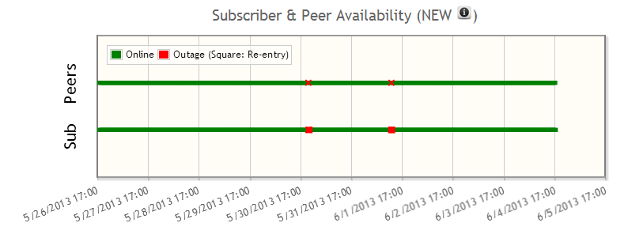
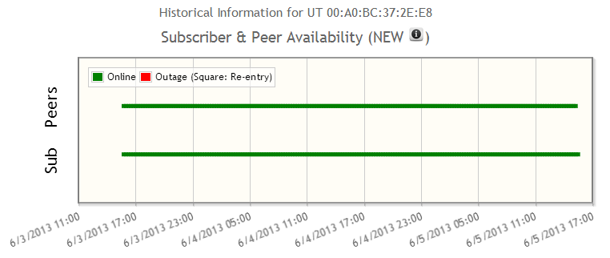
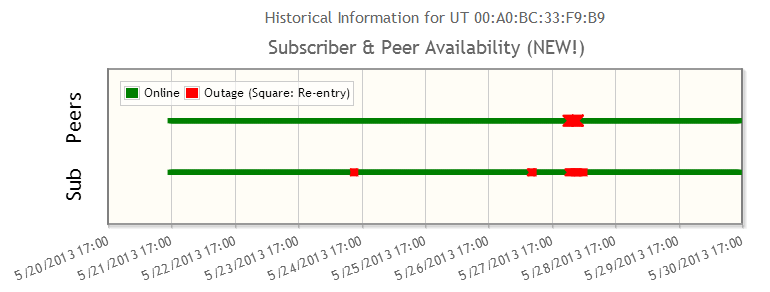
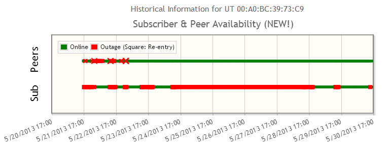
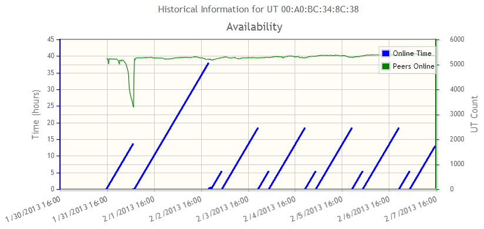
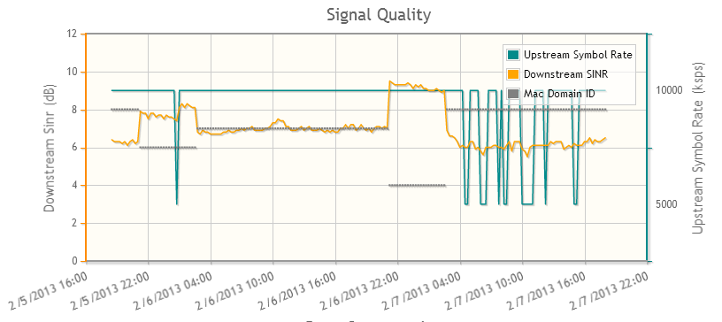

SubscriberHistory
From ESVT
This page is intended to help users learn some tips for interpreting the subscriber historical graphs.
Contents |
Subscriber & Peer Availability
This graph is designed to provide visibility in the historical availability of the service for the subscriber. This is frequently referred to as connectivity.
New Graph: How to Read It

- Quick Start
- Peer=Top line, Sub=Bottom line
- Green=Good, Red=Bad
- Peer and Sub both Red = Network outage likely impacted subscriber
- Peers Green and Sub Red = Problem is likely local to the subsciber
- Peers Red and Sub Green = Partial network outage, but did not affect subscriber
- Hover over anything red for more information
- Peer
- Green = Peers are all or mostly online
- Large Red X = Significant Outage (100% offline)
- Small Red X = Smaller Outage (i.e. 10-99% offline)
- Hover to see percentage offline
- Peer is defined to be users on the same Mac Domain as the subscriber. Note: older versions of the availability graph considered peers as the entire beam. This is more precise and therefore an improvement in assessing whether a subscriber outage is local to the subscriber or also affecting others.
- Sub
- Green = Online
- Red X = Offline
- Red Square = Re-entered the network, i.e. came back online
- Hover for duration of subscriber outage
New Example: Best case

- Why is this "best?"
- Clearly solid green lines all the way across for both Peers and this Subscriber.
New Example: Good case

- How to read the graph
- Over the course of 10 days, the subscriber experienced three outage events:
- Two were isolated to the subscriber and short in duration (5/24, 5/27).
- The other which was longer in duration, occurred overnight between 5/27-5/28. Since it was late at night, and also affected peers, it was likely a maintenance window.
- Over the course of 10 days, the subscriber experienced three outage events:
- Why is this "good?"
- This subscriber has had only limited outages over 10 days, so this would be a "good" but not "best" case scenario, but overall not a cause for alarm.
New Example: Bad case

- How to read the graph
- Between 5/21-5/22 there were significant outages affecting Peers, and the likely cause of outages for this subscriber.
- In the following days, the subscriber continued to experience repeated outages of many hours in duration (red smudges), while Peers were online (green).
- Why is this "bad?"
- Peer availability being poor between 5/21-5/22 has had a big impact on this subscriber.
- Many and long duration outages is a bad sign, particularly when peers are online. This is a good candidate for further investigation for potential installation (antenna pointing, equipment) or other issues which might cause a repeated loss of service.
- We would expect this customer to complain of frequent loss of connectivity.
Old Example: Uptime and LNFZ

Two things are interesting about this graph:
- DAP + LNFZ = Periodic resets
- Note that stating around 2/2 the UT is up for 5 hours, resets, 19 hours, reset and repeat
- This is because the user has exceeded their quota on or around 2/2 and in order to restore full speeds for LNFZ the UT is reset. In the future the speeds will be able to be changed without a reset, but for now this is the classic signature of LNFZ + DAP
- Partial Outage caused modem to fall off
- As a side note, around 4am on 2/1 the Peers Online drop by about 2000 users at the same time this UT falls off, which suggests a partial outage, likely resolved by an SMTS component failover.
Subscriber Performance: Signal Quality
This graph is designed to provide visibility into the historical performance of the physical layer for the UT, as represented by FL SINR and RL (HC) Symbol Rate.
FL SINR
- Definition
- MIB: Forward-link SINR
- Interpretation: A measure of the signal quality on the downstream, mispoints or weather make it worse. Clear sky, beam center is the best case.
- What is good?
- The target for FL SINR for antenna pointing is location dependent, in future versions eSVT will add a target line to the graph.
- The target for FL SINR for antenna pointing is shown when the user hovers over antenna pointed.
- General Comments:
- Higher FL SINR or better Downstream Signal means (1) the customer gets the same data more efficiently in terms of use of satellite bandwidth resources (2) is more likely to stay online when there is weather. More simply for (1) if data is people in a car going down the road, higher FL SINR means its a Chevy Suburban full of people, lower SNR means we only have VW beatle we have to send more cars to move the same amount of people. More simply for (2) you can somewhat think of high FL SINR as being in the left lane, and low as getting pushed to the right, if it goes too low, you fall off the road.
- It is not true that a decrease in FL SINR means the subscriber may have experienced connectivity issues. When FL SINR decreases and then goes to 0 and the availability graph shows the user going offline, that is a good indication that the subscriber fell offline because of weather or another signal quality issue. Only when it goes to 0 has the subscriber experienced a connectivity issue.
- Higher FL SINR or better Downstream Signal means (1) the customer gets the same data more efficiently in terms of use of satellite bandwidth resources (2) is more likely to stay online when there is weather. More simply for (1) if data is people in a car going down the road, higher FL SINR means its a Chevy Suburban full of people, lower SNR means we only have VW beatle we have to send more cars to move the same amount of people. More simply for (2) you can somewhat think of high FL SINR as being in the left lane, and low as getting pushed to the right, if it goes too low, you fall off the road.
RL Symbol Rate
- Definition
- MIB: UT home channel RL Symbol Rate in ksps
- Interpretation: A measure of the signal quality on the upstream, mispoints or weather make it worse. Clear sky, beam center is the best case.
- What is good?
- The target for RL Symbol Rate is generally >= 5 Msps for ViaSat-1 and >= 2.5 Msps for Augmentation.
- The target for RL Symbol Rate for antenna pointing is shown when the user hovers over antenna pointed.
- General Comments:
- For RL Symbol Rate the explanation is similar to FL SINR, higher means (1) the subscriber can achieve higher data rates on the RL (2) is more likely to stay online when there is weather. More simply for (1) high symbol rate = faster is sort of like being farther to the left on the freeway, 10 Msps is the fastest lane available. The important nuance to this which might change how you want to explain it to care agents is that likely only being on 625k channel will impact the users speeds. The subscriber will like be able to achieve full plan rates on uploads at 2.5Msps and higher channels.
Mac Domain ID
- MIB Definition: UT MAC domain ID. Returns last registered MAC domain.
- Interpretation: Each beam has up to 8 lanes (MACDs) to and from the users house, this is simply the lane the user is on. For SB1 people it's similar to the carrier in a beam. The reason it matters in this graph is because for most of the network the power levels are not balanced. The impact then is that if a user switches MACDs, which can happen on outages or LNFZ resets or for load balancing, the FL SINR may change suddenly by up to 2 dB. Power levels are being balanced across the network so this will improve over time.
Example: FL SINR Jumps on Change in MACD

- Note the two events around 2/6 20:00 and 2/7 01:00, the Mac Domain ID changes and correspondingly the FL SINR changes by almost 2dB.
- What happened?
- The UT is deregistered by LNFZ change of service in which case the UT randomly chooses a MACD (normal reset or falling offline will look first at the previous MACD).
- The noise and power levels are different enough that the FL SINR is very different for the same weather and antenna pointing.
- Impact?
- Use caution when using the FL SINR level as a metric on it's own. It's best to couple with the RL Symbol Rate to get insight into signal quality and antenna pointing.